System Breach
CyberpunkKonsep sistem yang diretas. Palet kuning-hitam-merah ala peringatan bahaya, tipografi besar dan asimetris, kartu "subject scan" untuk model, log terminal, dan alert "INTRUSION DETECTED".
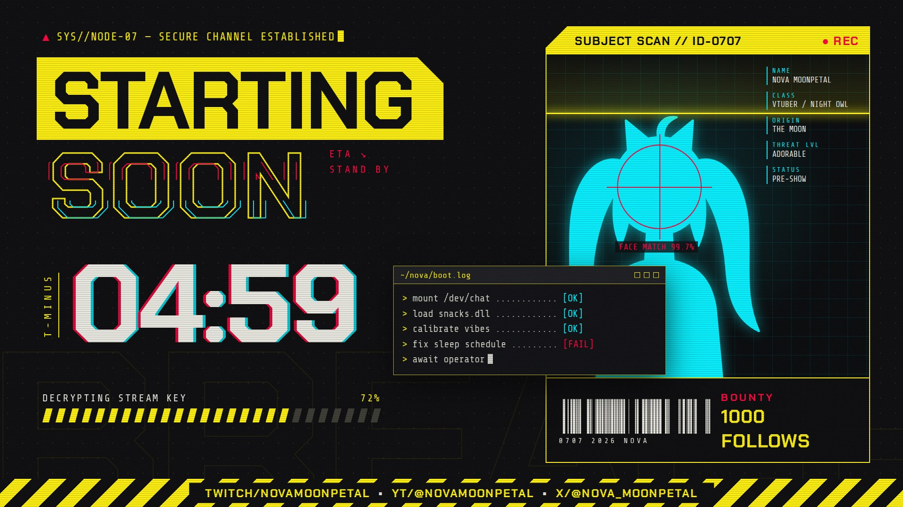
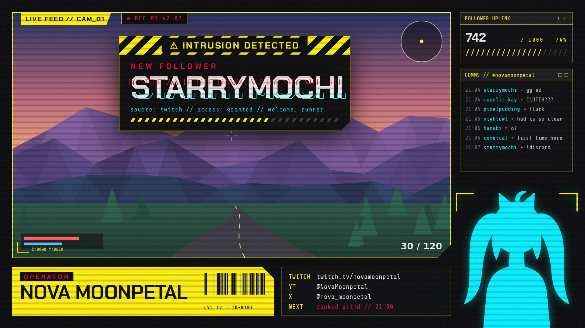
Setiap tema punya konsep, komposisi, tekstur, dan bentuk komponen sendiri, bukan hanya ganti warna. Tiap tema ditampilkan dalam 2 layar: Starting Soon dan Live (overlay saat main game, lengkap dengan alert, chat, goal, dan area model). Klik judul tema untuk membuka versi HTML yang beranimasi.
Konsep sistem yang diretas. Palet kuning-hitam-merah ala peringatan bahaya, tipografi besar dan asimetris, kartu "subject scan" untuk model, log terminal, dan alert "INTRUSION DETECTED".


Grafis siaran olahraga dengan tema terang. Kartu pemain (trading card) dengan stat lucu untuk model, jadwal minggu ini, dan score bug, lower third, serta ticker di layar Live. Alert berupa pengumuman transfer "HERE WE GO!".
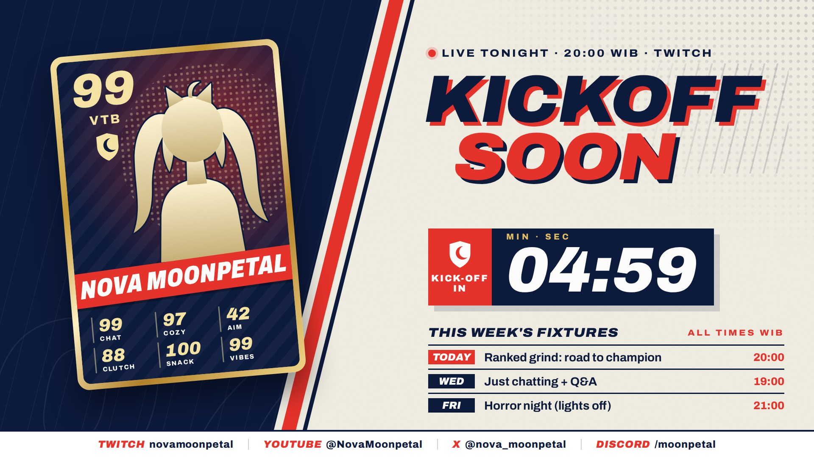
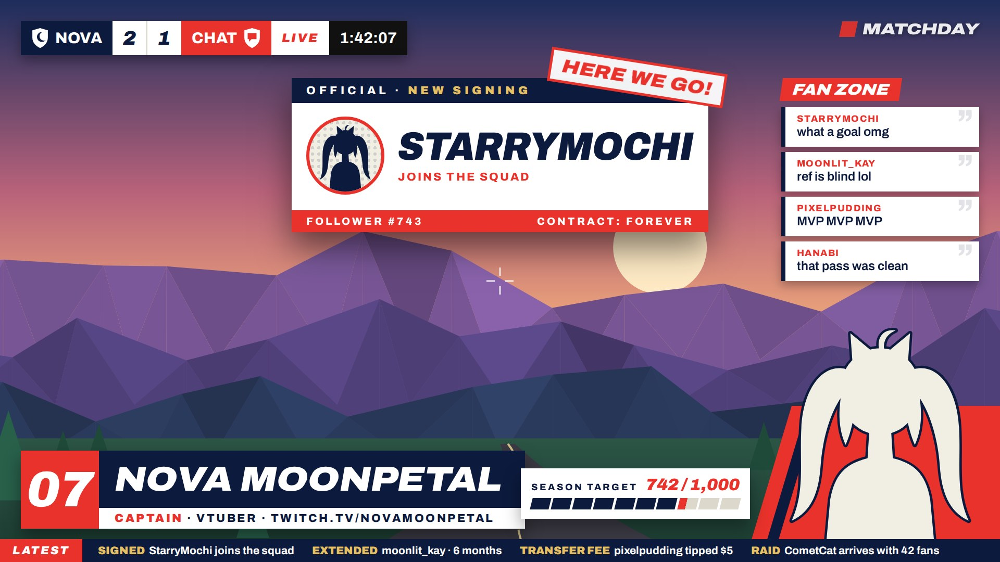
Halaman naskah kuno di atas kertas vellum. Huruf awal berlapis emas, huruf blackletter, bingkai lukisan miniatur untuk model, hitung mundur dalam angka Romawi abad pertengahan (iiij · lix), siput di margin, dan alert berupa maklumat bersegel lilin.
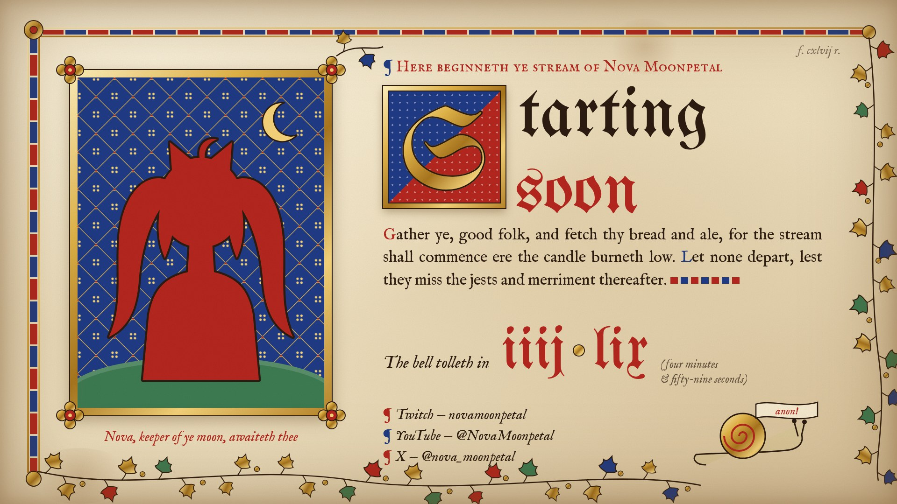
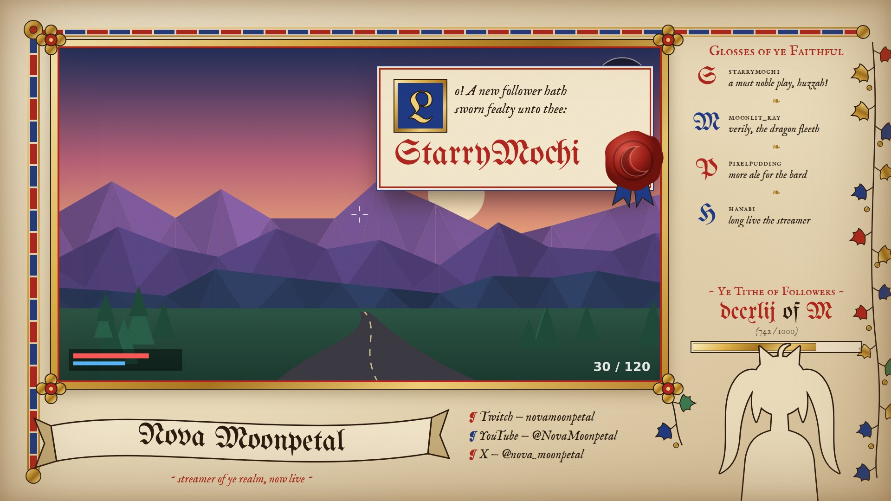
Geometri mozaik zellige dengan komposisi radial. Roset berlapis yang berputar dengan hitung mundur di tengahnya, dinding ubin di kiri-kanan, dan pita kaligrafi kufi. Di layar Live, goal berupa roset "halo" di belakang model.
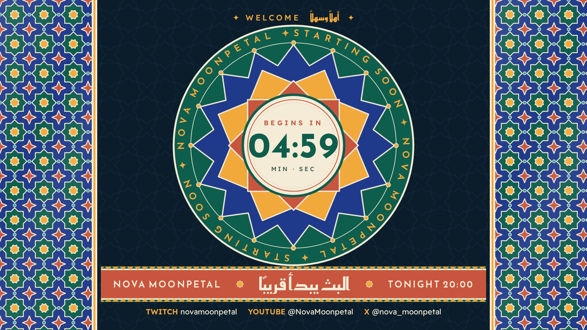
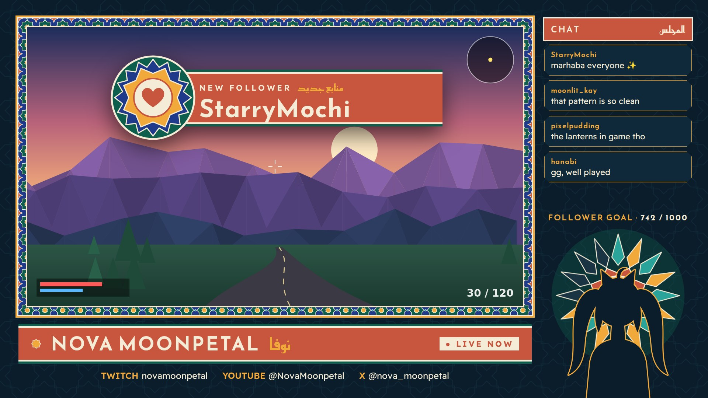
Halaman manga hitam-putih dengan satu warna aksen pink. Panel miring, garis fokus, screentone, efek suara katakana (ドキドキ, バーン!!), hitung mundur di dalam balon teriak, dan chat berupa balon ucapan.
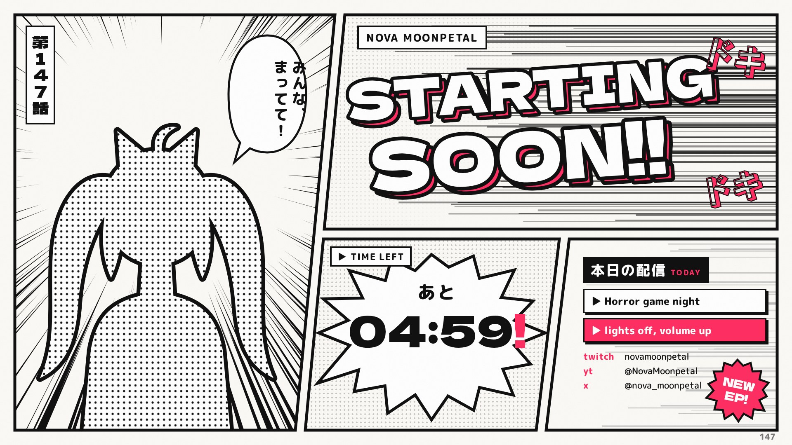
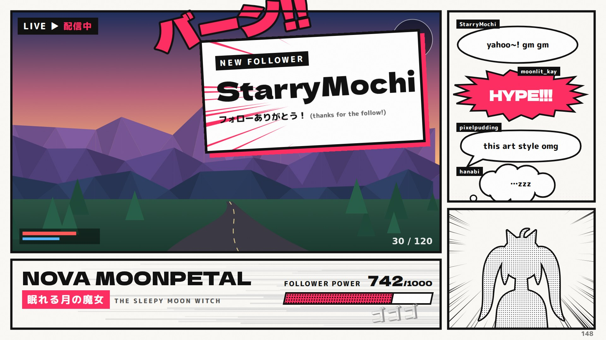
Hanya memakai 4 warna hijau Game Boy. Overworld pixel dengan sprite VTuber, kotak dialog dan menu RPG (WAIT / SNACKS / FOLLOW / SAVE). Layar Live berupa UI pertarungan: "A wild STARRYMOCHI appeared!".
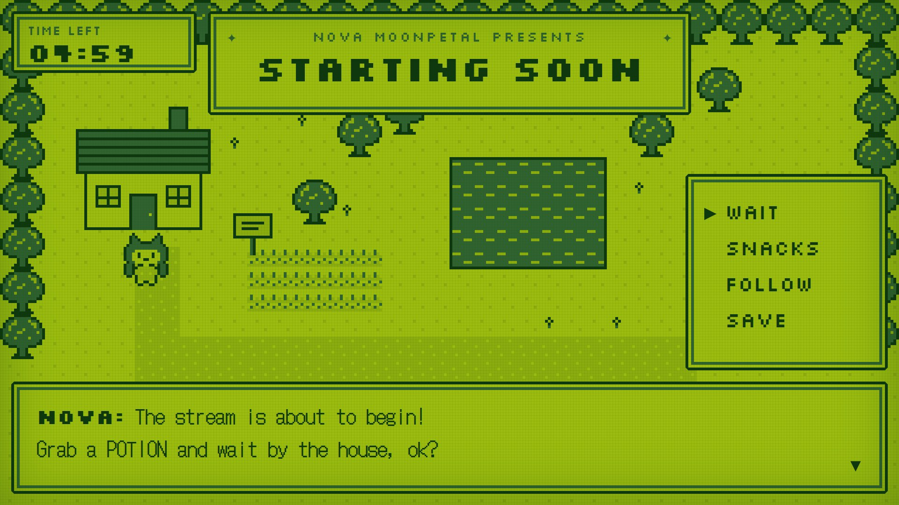
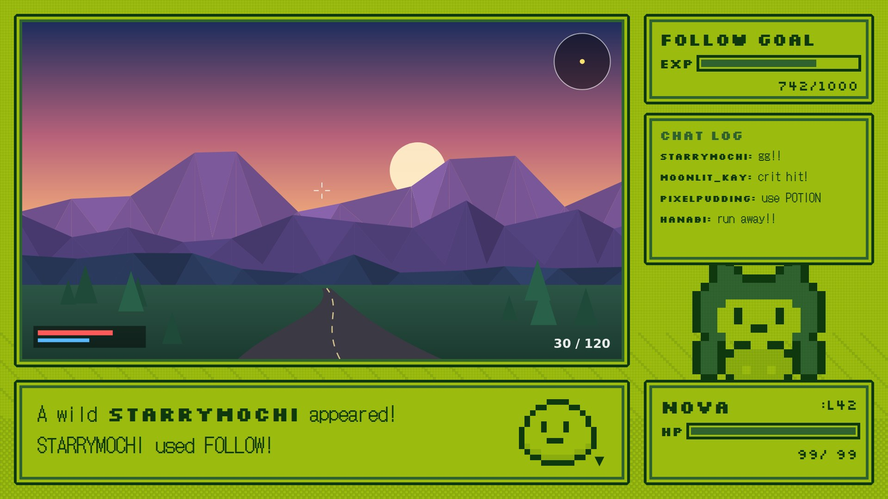
Meja belajar dilihat dari atas. Buku catatan berisi to-do list, polaroid untuk model, timer dapur digital untuk hitung mundur, kopi dengan latte art, washi tape, dan sticky note. Di layar Live, chat tampil di halaman buku dan alert berupa sticky note.
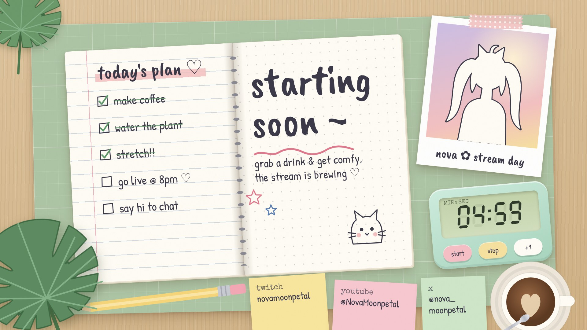
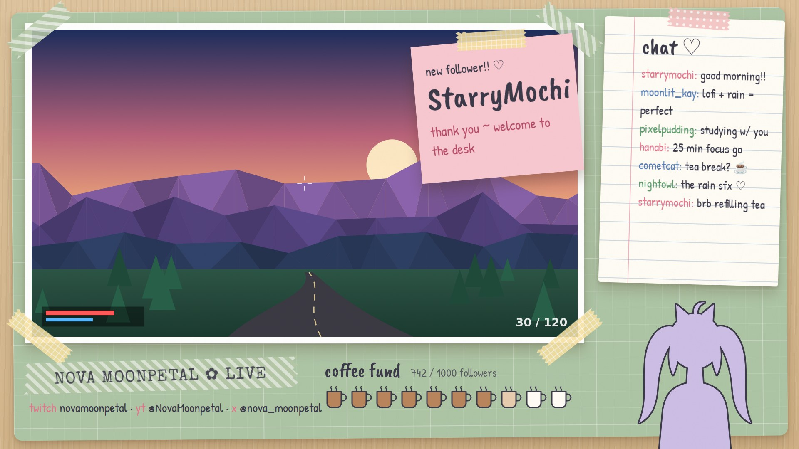
Ruang kemudi kapal selam dari kuningan. Telegraf mesin di posisi "STAND BY", depth gauge dengan penghitung mekanis, dan porthole ke laut. Di layar Live, goal berupa pressure gauge, chat berupa telegram yang diakhiri "STOP", dan alert berupa kontak sonar.
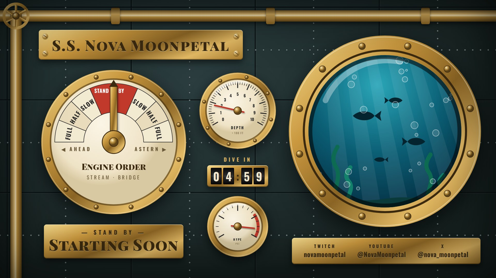
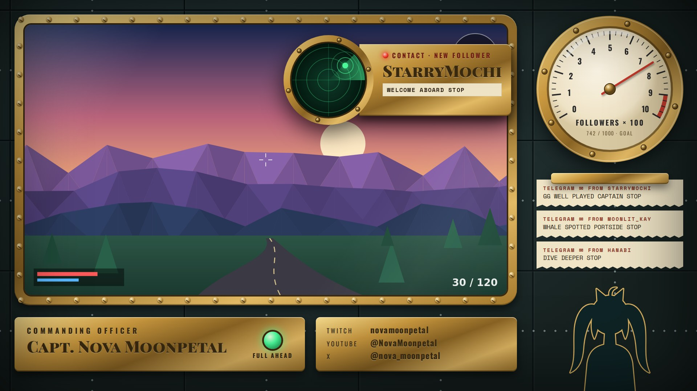